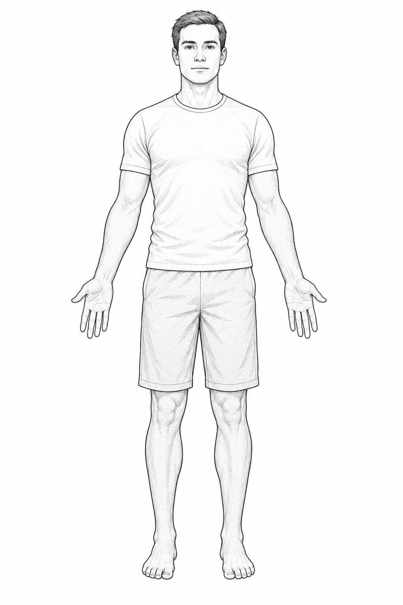
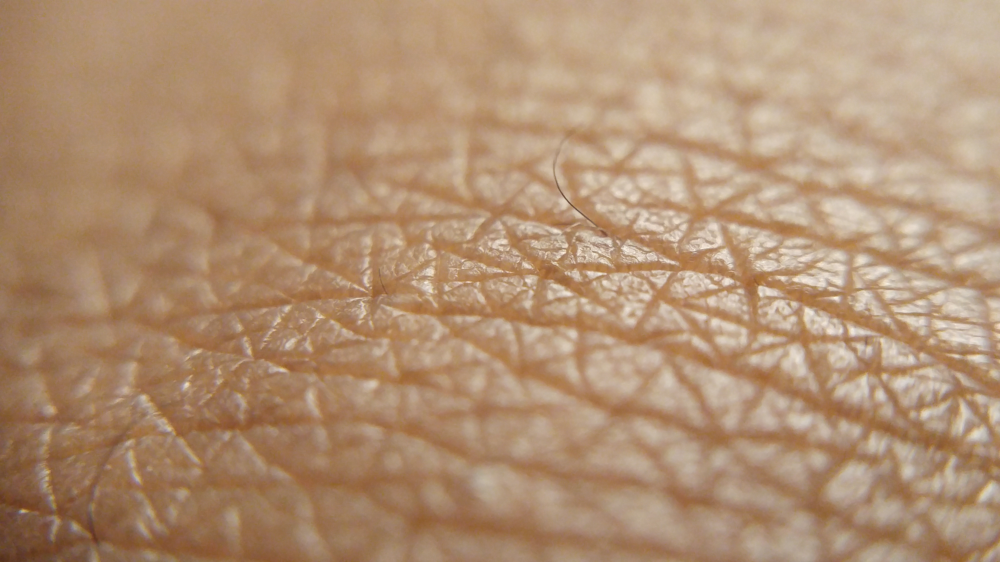
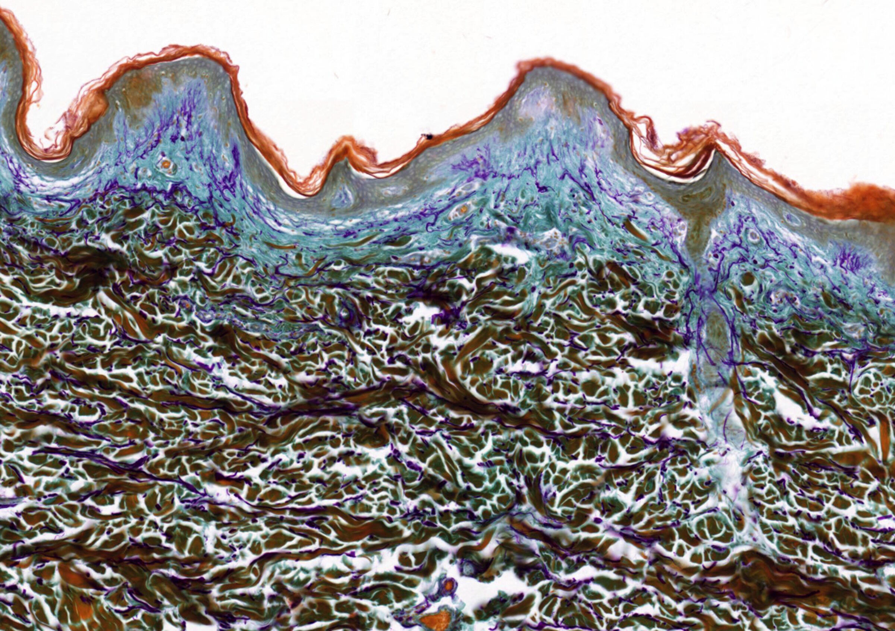
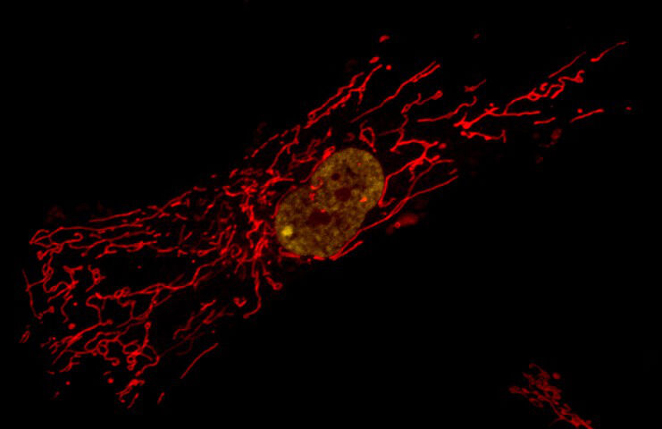

One illustrative body sketch and observed human skin/microscopy, retained as independent full fields. This is a visual revision prototype; acceptance review is pending.
Return to the interactive figure · Machine-readable provenance
Original AI-generated clothed anatomical line drawing, anterior view. No real person or calibrated dimensions are represented. This replaces the earlier unclothed whole-body studio photograph.
Drawing credits and limitations · Prompt and provenance

Montavius Howard (TongCreator), from Pixabay. Owning record · CC0 1.0.
Human skin close-up, dated 2017-01-18. Commons current original uploaded 2019-01-02; Commons licence reviewer confirmed Pixabay availability 2019-02-27. Body site, donor age, diagnostic status and physical field width unspecified. Shallow optical depth of field; central in-focus surface furrows and fine hairs are visible. No pathology or cellular-identification claims.
5312 × 2988 native pixels. No new local image edits. Full native source file retained and independently fitted with object-fit:contain; no local crop, recoloring or synthesized detail.
Open delivered full-size image · Source download
SHA-256 796b25b19ab2659f6286a80b0b117beb86a6c83ed7b87918412ef76556b21e68

Kevin Mackenzie, University of Aberdeen. Owning record · CC BY 4.0.
Human skin section stained with aldehyde fuchsin, Orange G and Light Green. Owning record: elastic fibres purple; collagen green to yellow; full horizontal field width400micrometres. Body site, donor, pathology/normality, fixation, section thickness and optical equipment unspecified. Superficial epithelial band/deeper connective tissue description is visual interpretation; no individual-cell classification.
2400 × 1692 native pixels. No new local image edits. Full native source file retained and independently fitted with object-fit:contain; no local crop, recoloring or synthesized detail.
Open delivered full-size image · Source download
SHA-256 a2f25d3d9d7d98a949ee274e15e3e011ea7914d0cdf25c421b2b0768fc686b09

Matthew Daniels / University of Oxford. Owning record · CC BY 4.0.
Primary human fibroblast, confocal micrograph. Archive describes mitochondria red, nucleus yellow. Dye identities, live/fixed status, culture protocol, donor and physical calibration unspecified. Full native image741x480, lower than prior760px derivative; never hallucinated upscaled. Fibroblast is separate specimen, not isolated from preceding skin section. Print image constrained62mm wide (~304ppi). Distinct organelles outside the archive label are not asserted.
741 × 480 native pixels. No new local image edits. Full native source file retained and independently fitted with object-fit:contain; no local crop, recoloring or synthesized detail.
Open delivered full-size image · Source download
SHA-256 318e338bf4a8eeec122565306ec304ada91f0efc0f85e34fd630ae1823cb552b
